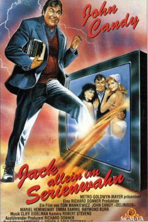
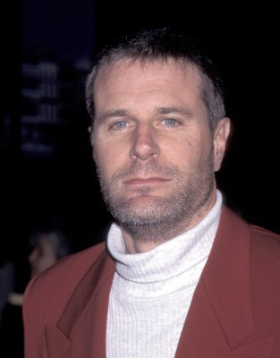
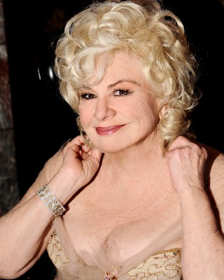

#9114 Des Wahnsinns fette Beute
Alternativ: Delirious - Jack allein im Serienwahn
 
 IMDB-Wertung: 5.8 / 10
IMDB-Wertung: 5.8 / 10  Metascore: 0
Metascore: 0 
Jack Gable (John Candy), Drehbuchautor einer erfolgreichen TV-Serie, erwacht nach einem Unfall im Krankenhaus. Irgendwie wirkt hier alles merkwürdig vertraut - Jack ist in seiner eigenen Serie gelandet! Nach dem ersten Schock wird Jack schnell klar, dass die neue Umgebung durchaus Vorteile mit sich bringt: zum Beispiel die Nähe von Rachel (Emma Samms), der temperamentvollen Hauptdarstellerin, in die er schon seit längerer Zeit heimlich verliebt ist. Als sich auch noch herausstellt, dass Jack mit seiner Schreibmaschine den Gang der Ereignisse beeinflussen kann, scheint das Glück zum Greifen nahe. Doch dann tauchen ungeahnte Probleme auf - und auch die sympathische Janet (Mariel Hemingway) spielt plötzlich eine unerwartet große Rolle.
Jahr: 1991
Dauer: 92 Minuten
FSK: 12
Land: USA Studio: MGMTonspuren: DD2.0 - ,
Untertitel:
Auflösung: 1080p (1920x1040) Größe: 6799 MB
Genre: Komödie, Fantasy
Regisseur: Tom Mankiewicz
Drehbuch: Steven S. DeKnight
Soundtrack: Cliff Eidelman
Darsteller:
 John Candy als Jack Gable
John Candy als Jack Gable- Mariel Hemingway als Janet Dubois / Louise
- Emma Samms als Rachel Hedison / Laura Claybourne
 Raymond Burr als Carter Hedison
Raymond Burr als Carter Hedison Dylan Baker als Blake Hedison
Dylan Baker als Blake Hedison-  Charles Rocket als Ty Hedison
 David Rasche als Dr. Paul Kirkwood / Dennis
David Rasche als Dr. Paul Kirkwood / Dennis- Andrea Thompson als Nurse Helen Caldwell
 Zach Grenier als Mickey
Zach Grenier als Mickey Jerry Orbach als Lou Sherwood
Jerry Orbach als Lou Sherwood-  Renée Taylor als Arlene Sherwood
 Mark Boone Junior als Cable Man
Mark Boone Junior als Cable Man- Tony Steedman als Edward - the Butler
 Dick Durock als Riley
Dick Durock als Riley Anthony G. Schmidt als Mason
Anthony G. Schmidt als Mason- Murray Rubin als Manny
- Patrick Bristow als Bellboy
- Jason Ross-Azikiwe als Manu
- Susan Isaacs als Marie
- Marvin Kaplan als Typewriter Repairman
- Robert David Crane als Bob (uncredited)
 Margot Kidder als Woman in Washroom (uncredited)
Margot Kidder als Woman in Washroom (uncredited) Robert Wagner als Jack Gates (uncredited)
Robert Wagner als Jack Gates (uncredited)- Milt Oberman als Fetterman
 John Michael Bolger als Len
John Michael Bolger als Len- Rita Gomez als Marge
- Stephanie Segal als TV Reporter
- Mark Zuelke als Chauffeur
- Peter Bromilow als Auctioneer
- Glenn Dixon als Elderly Man
- Paul Tuerpe als Waiter
- Fred Morsell als Choking Man
- Zack Phifer als Attendant
- Elaine Swayneson als Secretary
- Jay Della als Ashford Falls Cable Man
- Michael Caldwell als Busboy
- Bill Wittman als Soap Announcer
- John D. Bair als Xerox Delivery Man (uncredited)
- Robert M. Bouffard als Office Clerk (uncredited)
Datei: X:\1991\Des Wahnsinns fette Beute (1991, FSK12, 1920x1040).mkv seit 19.07.2018
Festplatte: HD 1987-1991
 Es gibt insgesamt 53 Filme in der Gruppe '1991'
Es gibt insgesamt 53 Filme in der Gruppe '1991'